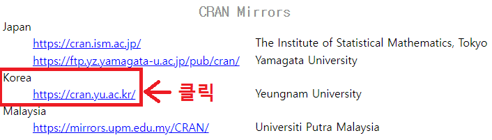
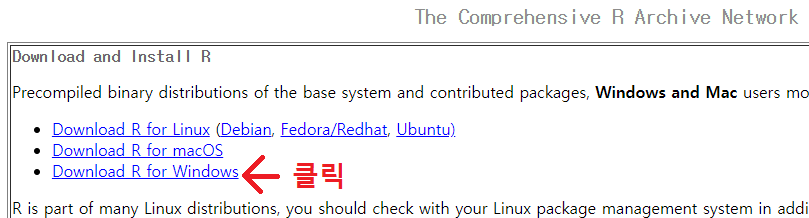
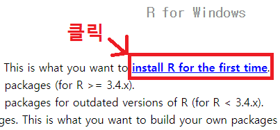

R을 사용하기 위해서는 R을 설치해야 합니다.
R 공식 홈페이지(https://www.r-project.org/)에 접속합니다.
왼쪽 메뉴 중 '다운로드'의 'CRAN'을 클릭합니다.
'CRAN Mirrors' 페이지에서 스크롤을 내려 'Korea'의 'http://cran.yu.ac.kr/'을 클릭합니다.
'The Comprehensive R Archive Network' 페이지에서 'Download R for Windows'를 클릭합니다.
'R for Windows' 페이지에서 'install R for the first time'을 클릭합니다.